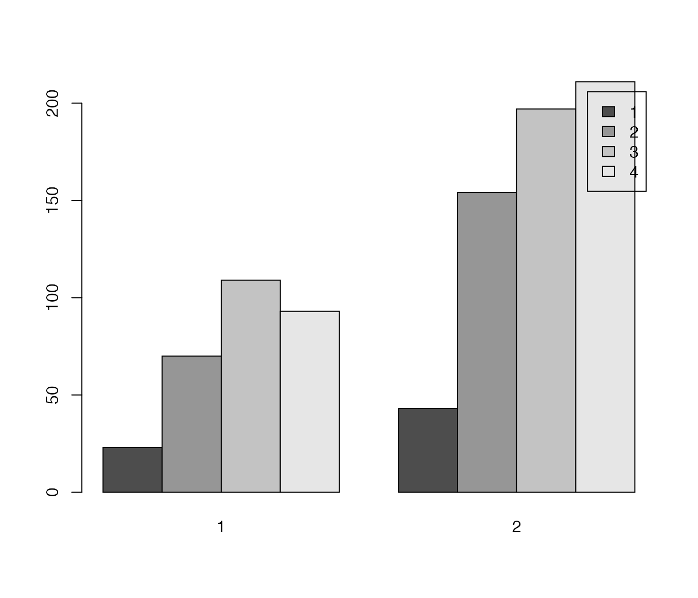

vignettes/labelleddata.Rmd
labelleddata.RmdThis vignette shows a small example how functions to work with labelled data can be implemented in a typical data visualization workflow.
In software like SPSS, it is common to have value and variable labels as variable attributes. Variable values, even if categorical, are mostly numeric. In R, however, you may use labels as values directly:
Reading SPSS-data with haven or sjlabelled keeps the numeric values for variables and adds the value and variable labels as attributes. See following example from the sample-dataset efc, which is part of the sjlabelled-package:
library(sjlabelled)
data(efc)
str(efc$e42dep)
#> num [1:908] 3 3 3 4 4 4 4 4 4 4 ...
#> - attr(*, "label")= chr "elder's dependency"
#> - attr(*, "labels")= Named num [1:4] 1 2 3 4
#> ..- attr(*, "names")= chr [1:4] "independent" "slightly dependent" "moderately dependent" "severely dependent"While all plotting and table functions of the sjPlot-package make use of these attributes, many packages and/or functions do not consider these attributes, e.g. R base graphics:
library(sjlabelled)
data(efc)
barplot(
table(efc$e42dep, efc$e16sex),
beside = TRUE,
legend.text = TRUE
)
As you can see in the above figure, the plot has neither axis nor legend labels.
as_label() is a sjlabelled-function that converts a numeric variable into a factor and sets attribute-value-labels as factor levels. When using factors with valued levels, the bar plot will be labelled.
There are four functions that let you easily set or get value and variable labels of either a single vector or a complete data frame:
get_label() to get variable labelsget_labels() to get value labelsset_label() to set variable labels (add them as vector attribute)set_labels() to set value labels (add them as vector attribute)With this function, you can easily add titles to plots dynamically, i.e. depending on the variable that is plotted.
The base subset() function drops label attributes (or vector attributes in general) when subsetting data. In the sjlabelled-package, there are handy functions to deal with this problem: copy_labels() and remove_labels().
copy_labels() adds back labels to a subsetted data frame based on the original data frame. And remove_labels() removes all label attributes.
efc.sub <- subset(efc, subset = e16sex == 1, select = c(4:8))
str(efc.sub)
#> 'data.frame': 296 obs. of 5 variables:
#> $ e17age : num 74 68 80 72 94 79 67 80 76 88 ...
#> $ e42dep : num 4 4 1 3 3 4 3 4 2 4 ...
#> $ c82cop1: num 4 3 3 4 3 3 4 2 2 3 ...
#> $ c83cop2: num 2 4 2 2 2 2 1 3 2 2 ...
#> $ c84cop3: num 4 4 1 1 1 4 2 4 2 4 ...
efc.sub <- copy_labels(efc.sub, efc)
str(efc.sub)
#> 'data.frame': 296 obs. of 5 variables:
#> $ e17age : num 74 68 80 72 94 79 67 80 76 88 ...
#> ..- attr(*, "label")= chr "elder' age"
#> $ e42dep : num 4 4 1 3 3 4 3 4 2 4 ...
#> ..- attr(*, "label")= chr "elder's dependency"
#> ..- attr(*, "labels")= Named num [1:4] 1 2 3 4
#> .. ..- attr(*, "names")= chr [1:4] "independent" "slightly dependent" "moderately dependent" "severely dependent"
#> $ c82cop1: num 4 3 3 4 3 3 4 2 2 3 ...
#> ..- attr(*, "label")= chr "do you feel you cope well as caregiver?"
#> ..- attr(*, "labels")= Named num [1:4] 1 2 3 4
#> .. ..- attr(*, "names")= chr [1:4] "never" "sometimes" "often" "always"
#> $ c83cop2: num 2 4 2 2 2 2 1 3 2 2 ...
#> ..- attr(*, "label")= chr "do you find caregiving too demanding?"
#> ..- attr(*, "labels")= Named num [1:4] 1 2 3 4
#> .. ..- attr(*, "names")= chr [1:4] "Never" "Sometimes" "Often" "Always"
#> $ c84cop3: num 4 4 1 1 1 4 2 4 2 4 ...
#> ..- attr(*, "label")= chr "does caregiving cause difficulties in your relationship with your friends?"
#> ..- attr(*, "labels")= Named num [1:4] 1 2 3 4
#> .. ..- attr(*, "names")= chr [1:4] "Never" "Sometimes" "Often" "Always"